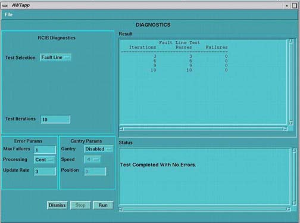
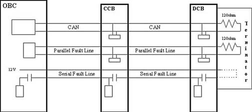
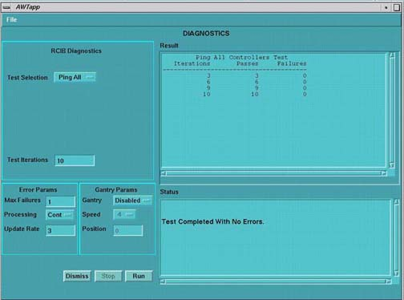

Proprietary to General Electric
Direction 5114045-800, Rev# 10
LightSpeed 4.X Service Information (Advanced)
Proprietary to General Electric |
These diagnostics are accessed by launching Diagnostics from the Service Desktop.
[SERVICE DESKTOP] -> [DIAGNOSTICS] -> [SYSTEM CONTROL] -> [RCIB DIAGNOSTICS] -> [FAULT LINE]
Illustration 1: Fault Line Screen

The Fault Line Diagnostic validates the parallel and serial fault line between the OBC, DCB, and CCB. Test consists of opening and closing the fault relays on each node and validating that all nodes see the fault.
Run test to detect intermittent fault line failures.
Run after fixing fault line problem to validate fix.
Look for any failures in the "Failures" column.
Look for cable swap issues.
Test can be run in the applications and diagnostic download.
OBC must be downloaded for test to run.
Test runs with diagnostic or application firmware downloads.
Illustration 2: Fault Line

[SERVICE DESKTOP] -> [DIAGNOSTICS] -> [SYSTEM CONTROL] -> [RCIB DIAGNOSTICS] -> [PING]
Illustration 3: PING Screen

The RCIB Ping Diagnostic sends small CAN packets to the selected nodes and verifies the correct response is received. This test works much the same way as a UNIX ping command.
Run test to detect intermittent CAN serial line problems failures.
Run after fixing CAN problem to validate fix.
Test can be run to determine the status of the node.
Look for any failures in the “Failures” column. Check error log for more information, if a problem is detected.
OBC must be downloaded for test to run.
Test can be run in the applications and diagnostic download.
Test makes extensive use of slip-ring and ethernet communication lines.